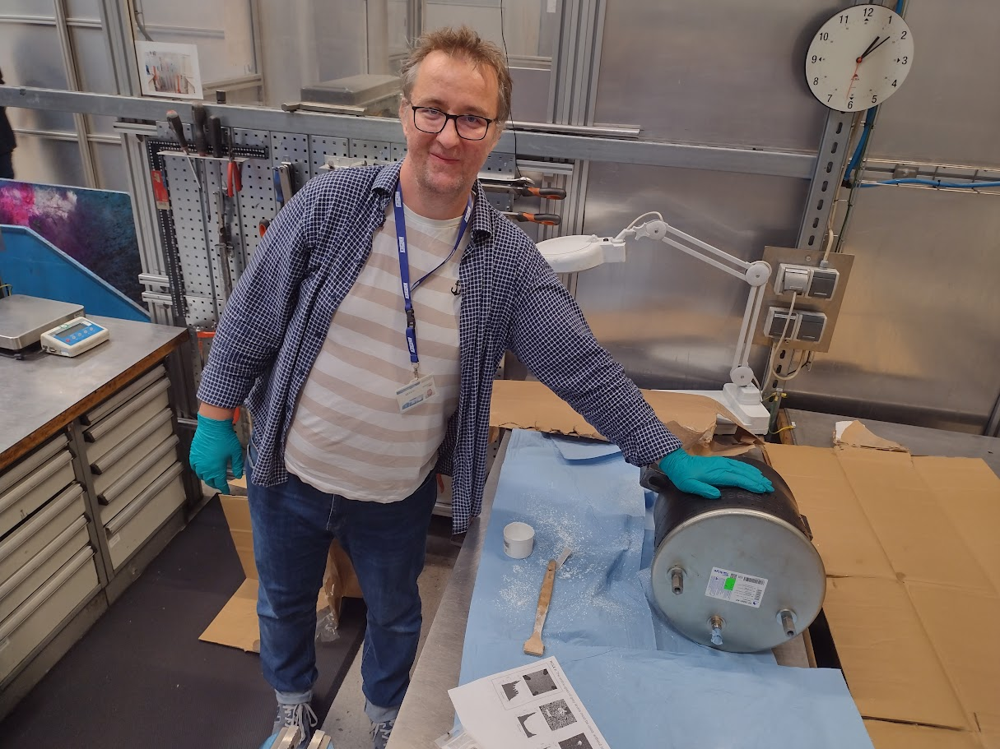

CAE Team Leader | Fatigue Specialist | Optimization in Mechanics
Planning and setting clear goals for the team, alongside defining key priorities, guarantees maximum focus on the most important tasks. I am responsible for effectively delegating tasks based on team members' strengths and competencies, while ensuring the necessary resources, such as tools and information, are available. My role also involves providing daily support and guidance to team members in their ongoing activities. I efficiently facilitate meetings and communication, acting as a liaison between the team and other internal departments (CAD/PE/ME) or clients. I am also responsible for translating complex engineering and technical insights, for instance, from FEA results, into accessible language for clients and engineers from other departments or specialists. I actively help maintain a positive, productive working atmosphere and regularly report on team performance to the engineering supervisor.
With over 20 years of experience, I specialize in the advanced design, calculation, and optimization of vehicle suspension components, particularly monotube and twintube dampers, focusing on superior performance, durability, and addressing issues of fatigue. I am highly skilled in optimization techniques, which I have applied consistently throughout my career. My work involves the direct execution of complex engineering analyses, including FEA, and coordinating related laboratory test programs. Crucially, over the last few years, this core optimization focus has been significantly enhanced by my involvement in developing methodologies that integrate it with Deep Learning AI. As a Team Leader, I provide technical guidance and support to team members, while also coordinating input related to Production Engineering (PE) requirements. Furthermore, my expertise extends to projects involving braking systems, air spring designs utilizing rubber reinforced with embedded nylon cords, as well as the development of glass fiber-reinforced polyamide composites.
My post-graduate professional experience began at Enercon, where I established my engineering foundations. I actively participated in the structural analysis and certification of large-scale wind turbines, including the E-128—then the world’s largest turbine. This comprehensive work involved close collaboration with CAD departments, structural optimization, and the development of programs for calculation automation or scripting for FEA software. My core responsibilities included detailed analysis of wind loads and component fatigue, along with the preparation of all necessary calculations for official regulatory certification, including detailed fatigue analysis of elements such as bolts.
My materials expertise was expanded through pioneering research on advanced silicon films, which I conducted as part of the KMM Network of Excellence (KMM NoE) student projects in collaboration with PhD candidates from across Europe and numerous European companies. This work involved designing thin layers, such as those utilized in braking systems for companies like Alstom, enhancing the understanding and application of cutting-edge material technologies. The research and collaboration formed the basis for my Master's thesis, which received a distinction from the university, and culminated in a published book on thin films and Functionally Graded Materials (FGM), where I am a co-author of the chapter dedicated to numerical modeling.
My first encounter with advanced engineering took place after the 3rd year of studies at CERN, the European Organization for Nuclear Research. I was responsible for executing high-stakes finite element calculations (FEA) for critical components of the Large Hadron Collider (LHC), contributing to breakthrough advances in particle physics infrastructure. These analyses covered the strength of components supplying electricity to the accelerator, cooling systems, analysis of soldering stages, and the buckling phenomena of the bellows supplying the liquid cooling medium to the accelerator.
